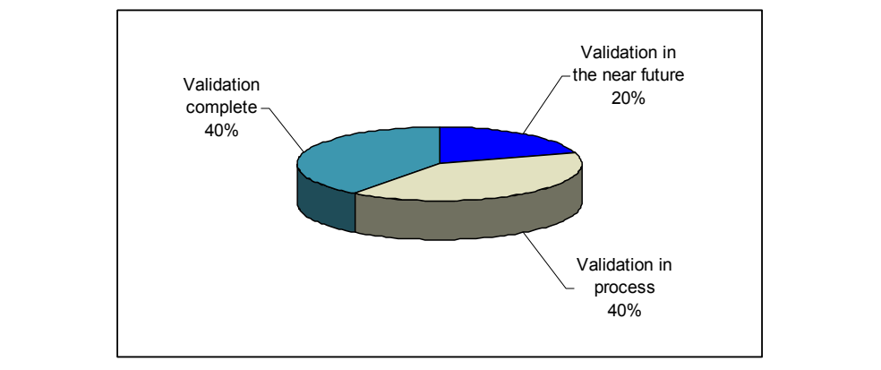
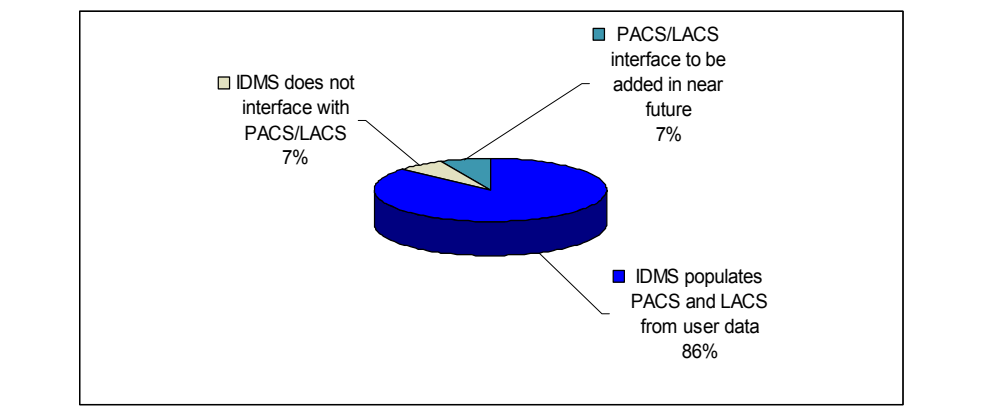
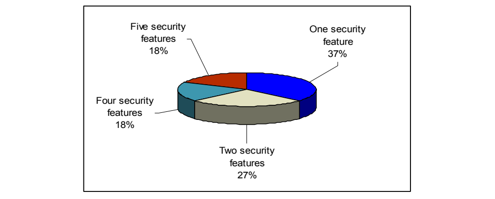
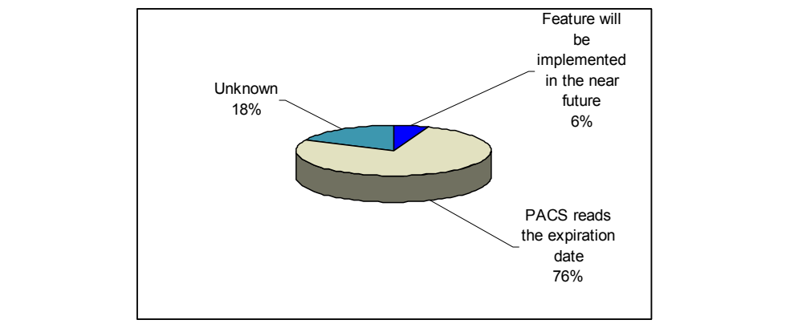
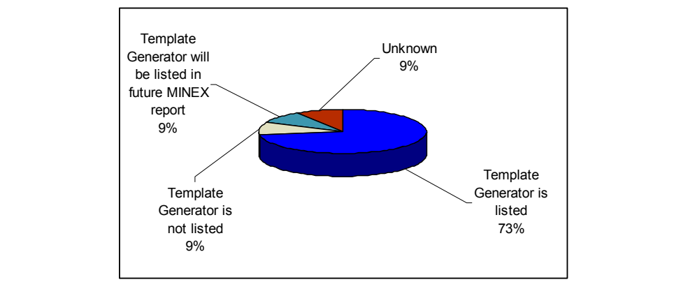

NIST IR 7337 日本語訳
英語タイトル : Personal Identity Verification Demonstration Summary日本語タイトル : 個人識別検証デモンストレーションの概要
公開日 : 2006-08-31
原文URL : https://csrc.nist.gov/pubs/ir/7337/final
原本 PDF : https://doi.org/10.6028/NIST.IR.7337
訳文 : 有志による非公式の日本語訳（AI による翻訳とレビュー）。全 158 段落のうち 156 段落を翻訳済み（原文取得日 : 2026-10-31）
[要約] NIST IR 7337 は、NIST が 2006 年 5 月 15 日から 6 月 14 日にかけて実施した個人識別検証（PIV）デモンストレーションの概要を示した報告書です。このデモンストレーションの目的は、FIPS 201 および付随する特別刊行物を支援する市販製品について、概念実証と相互運用性のデモンストレーションを示すことであり、44 社が共同研究開発契約（CRADA）を通じて任意で参加し、25 を超える連邦機関・省庁の職員が出席しました。デモンストレーションは 2 段階で行われ、第 1 段階で各企業が NIST の担当者に製品を実演し、第 2 段階で連邦機関・省庁が NIST の敷地を訪れました。報告書は、FIPS 201 の構成要素の分類ごとに、暗号モジュール検証の状況などを含む結果を述べ、参加企業の一覧と略語を付しています。
［NIST のロゴ。公的な標章のため、この非公式サイトには掲載していません。原本 PDF を参照してください。］
NISTIR 7337
NISTIR 7337
Personal Identity Verification Demonstration Summary
個人識別検証デモンストレーションの概要
Erika McCallister
Erika McCallister
Hildegard Ferraiolo
Hildegard Ferraiolo
NISTIR 7337
NISTIR 7337
Personal Identity Verification Demonstration Summary
個人識別検証デモンストレーションの概要
Erika McCallister
Erika McCallister
Hildegard Ferraiolo
Hildegard Ferraiolo
COMPUTER SECURITY
コンピュータセキュリティ
Information Technology Laboratory
情報技術研究所
National Institute of Standards and Technology
米国国立標準技術研究所
Gaithersburg, MD, 20899-8940
Gaithersburg, MD, 20899-8940
August 2006
2006年8月
［米国商務省の紋章。公的な標章のため、この非公式サイトには掲載していません。原本 PDF を参照してください。］
U.S. Department of Commerce
Carlos M. Gutierrez, Secretary
米国商務省
Carlos M. Gutierrez 長官
National Institute of Standards and Technology
William A. Jeffrey, Director
米国国立標準技術研究所
William A. Jeffrey 所長
REPORTS ON COMPUTER SYSTEMS TECHNOLOGY
コンピュータシステム技術に関する報告書
The Information Technology Laboratory (ITL) at the National Institute of Standards and Technology (NIST) promotes the U.S. economy and public welfare by providing technical leadership for the Nation’s measurement and standards infrastructure. ITL develops tests, test methods, reference data, proof of concept implementations, and technical analyses to advance the development and productive use of information technology. ITL’s responsibilities include the development of management, administrative, technical, and physical standards and guidelines for the cost-effective security and privacy of non-national security-related information in Federal information systems. This Interagency Report discusses ITL’s research, guidelines, and outreach efforts in information system security, and its collaborative activities with industry, government, and academic organizations.
米国国立標準技術研究所（NIST）の情報技術研究所（ITL）は、米国の測定・標準基盤に対する技術的リーダーシップを提供することにより、米国の経済と公共の福祉を促進しています。ITL は、情報技術の発展と生産的な利用を推進するため、試験、試験方法、参照データ、概念実証の実装、技術分析を開発しています。ITL の責務には、連邦情報システムにおける国家安全保障に関係しない情報について、費用対効果の高いセキュリティとプライバシーを実現するための、管理面・運用面・技術面・物理面の標準およびガイドラインの策定が含まれます。この省庁間報告書は、情報システムセキュリティに関する ITL の研究、ガイドライン、アウトリーチの取り組みと、産業界、政府、学術機関との協力活動を扱います。
National Institute of Standards and Technology Interagency Report, 19 pages (August 2006)
米国国立標準技術研究所 省庁間報告書、19ページ（2006年8月）
Certain commercial entities, equipment, or materials may be identified in this document in order to describe an experimental procedure or concept adequately. Such identification is not intended to imply recommendation or endorsement by the National Institute of Standards and Technology, nor is it intended to imply that the entities, materials, or equipment are necessarily the best available for the purpose.
本書では、実験の手順や概念を適切に説明するために、特定の商業的な事業体、装置、資材を示す場合があります。こうした表示は、米国国立標準技術研究所による推奨や承認を意味するものではなく、それらの事業体、資材、装置が目的に照らして必ずしも最良のものであることを意味するものでもありません。
Acknowledgements
謝辞
The authors, Erika McCallister and Hildegard Ferraiolo of the National Institute of Standards wish to thank their colleagues who reviewed drafts of this document and contributed to its development. The authors also gratefully acknowledge and appreciate the many contributions from the product developers and integrators for participation in the PIV demonstration project.
著者である米国国立標準技術研究所の Erika McCallister と Hildegard Ferraiolo は、本書の草案をレビューし、その作成に貢献した同僚に感謝します。また、PIV デモンストレーションプロジェクトに参加した製品開発者およびインテグレーターからの多くの貢献に対し、著者は深く感謝します。
Table of Contents
目次
List of Appendices
付録の一覧
List of Figures
図の一覧
1. Introduction
1. はじめに
On August 27, 2004, the President signed Homeland Security Presidential Directive 12 (HSPD-12), entitled “Policy for a Common Identification Standard for Federal Employees and Contractors.” HSPD-12 required the development and implementation of a government-wide standard for secure and reliable forms of identification for Federal employees and contractors. As required by HSPD-12, the National Institute of Standards and Technology (NIST) issued Federal Information Processing Standard 201 (FIPS 201). Subsequently, NIST issued a number of Special Publications in support of FIPS 201 to enable interoperable implementations. To ensure interoperability, NIST created a conformance test suite for Personal Identity Verification (PIV) card applications and middleware, which is being used by independent laboratories to conduct the conformance testing.
2004年8月27日、大統領は、「連邦職員および契約業者のための共通身分証明基準に関する政策（Policy for a Common Identification Standard for Federal Employees and Contractors）」と題する国土安全保障大統領指令12（HSPD-12）に署名しました。HSPD-12 は、連邦職員および契約業者に対する、安全で信頼できる形態の身分証明について、政府全体の標準を策定し実装することを求めていました。HSPD-12 の要求に従い、米国国立標準技術研究所（NIST）は連邦情報処理標準201（FIPS 201）を発行しました。その後 NIST は、相互運用可能な実装を可能にするため、FIPS 201 を支援する複数の特別刊行物を発行しました。相互運用性を確保するため、NIST は個人識別検証（PIV）カードアプリケーションおよびミドルウェアの適合性試験スイートを作成しており、これは独立した試験所による適合性試験に使用されています。
With the October 27, 2006, deadline for agencies to implement FIPS 201 fast approaching, NIST sought voluntary participation by companies offering products and services supporting FIPS 201 for the PIV Demonstration. The PIV Demonstration provided NIST the opportunity to conduct proof of concept and interoperability demonstrations of products supporting FIPS 201 and accompanying Special Publications. The demonstration resulted in a useful exchange of information among Federal agencies, vendors, and NIST.
各機関が FIPS 201 を実装する期限である2006年10月27日が迫る中、NIST は、FIPS 201 を支援する製品およびサービスを提供する企業に、PIV デモンストレーションへの任意参加を求めました。PIV デモンストレーションにより、NIST は、FIPS 201 および付随する特別刊行物を支援する製品の概念実証と相互運用性を実演する機会を得ました。このデモンストレーションでは、連邦機関、ベンダー、NIST の間で有益な情報交換が行われました。
2. Background
2. 背景
The PIV Demonstration took place from May 15 to June 14, 2006. Forty-four companies voluntarily participated through a Cooperative Research and Development Agreement (CRADA) with NIST. The purpose of the demonstration was to show proof of concept and interoperability demonstrations of commercially available products that support FIPS 201 and the accompanying special publications. Personnel from over 25 different Federal agencies and departments attended the PIV Demonstration.
PIV デモンストレーションは、2006年5月15日から6月14日にかけて行われました。44社が、NIST との共同研究開発契約（CRADA）を通じて任意で参加しました。デモンストレーションの目的は、FIPS 201 および付随する特別刊行物に対応する市販製品について、概念実証と相互運用性を実証することでした。25を超える連邦機関・省庁の職員が PIV デモンストレーションに出席しました。
The demonstration was divided into two phases. During the first phase, each company met with NIST representatives for 2-3 hours to demonstrate and to discuss their FIPS 201 product solution. This provided NIST with a unique opportunity to observe and discuss current product capabilities. The companies were provided the opportunity to ask questions of NIST and to provide general input to NIST about the PIV Program. During the second phase of the demonstration, Federal agencies and departments were invited to the NIST campus to attend the PIV Demonstration. Agency representatives were provided the opportunity to meet with technical representatives from each of the companies to observe demonstrations of FIPS 201 solutions and to ask questions relevant to each agency’s implementation.
デモンストレーションは2つの段階に分かれていました。第1段階では、各企業が2〜3時間にわたって NIST の担当者と会い、FIPS 201 の製品ソリューションを実演し、議論しました。これにより NIST は、現在の製品の能力を観察し議論する貴重な機会を得ました。企業は、NIST に質問し、PIV プログラムについて NIST に一般的な意見を伝える機会を与えられました。デモンストレーションの第2段階では、連邦機関・省庁が NIST の敷地に招かれ、PIV デモンストレーションに出席しました。機関の代表者は、各企業の技術担当者と会って FIPS 201 ソリューションのデモンストレーションを見学し、各機関の実装に関連する質問をする機会を与えられました。
As part of the CRADA, companies were required to make their products available for use by NIST for the entire one month period of the PIV Demonstration. NIST used this opportunity to further study the product capabilities. As part of the interoperability aspect of the demonstration, NIST tried each of the issued cards in the various readers provided to observe interoperability among PIV components.
CRADA の一環として、企業は、PIV デモンストレーションの1か月の期間全体にわたり、NIST が使用できるように製品を提供することを求められました。NIST はこの機会を利用して、製品の能力をさらに調べました。デモンストレーションの相互運用性の側面として、NIST は、発行された各カードを、提供されたさまざまなリーダーで試し、PIV の構成要素間の相互運用性を観察しました。
3. Summary
3. 概要
The PIV Demonstration focused on FIPS 201 components in the following categories:
PIV デモンストレーションは、次の分類に属する FIPS 201 の構成要素に焦点を当てました。
•PIV Cards
•PIV カード
•Enrollment and Identity Management System (IDMS)
•登録および識別情報管理システム（IDMS）
•Issuance, Management, and Printing
•発行、管理、印刷
•Contact Readers
•接触式リーダー
•Contactless Readers and Physical Access Control System (PACS)
•非接触式リーダーおよび物理アクセス制御システム（PACS）
•Public Key Infrastructure (PKI)
•公開鍵基盤（PKI）
•Biometrics
•生体認証
The following subsections provide summaries of the products from each category. The summaries are based on vendor presentations, demonstration, and product specifications1.
以下の各小節では、各分類の製品の概要を示します。この概要は、ベンダーの発表、デモンストレーション、製品仕様1に基づいています。
3.1 PIV Cards
3.1 PIV カード
Nine companies presented ten PIV cards for the demonstration. The companies included smart card manufacturers, PIV card application developers capable of working with a variety of smart cards, and integrators capable of issuing a variety of PIV cards. All ten of the cards were either in process for conformance testing or had completed testing. Half of the cards had completed the PIV card application conformance testing through NIST PIV Program (NPIVP), while the cards’ cryptographic module validation for FIPS 140-2 compliance through the Cryptographic Validation Program (CMVP) is progressing as shown in figure 1:
9社が10種類の PIV カードをデモンストレーションに出展しました。これらの企業には、スマートカードの製造者、さまざまなスマートカードで動作できる PIV カードアプリケーションの開発者、さまざまな PIV カードを発行できるインテグレーターが含まれていました。10種類のカードはすべて、適合性試験の手続き中か、試験を完了していました。半数のカードは、NIST PIV プログラム（NPIVP）による PIV カードアプリケーションの適合性試験を完了しており、暗号モジュール検証プログラム（CMVP）による FIPS 140-2 準拠のためのカードの暗号モジュール検証は、図 1 に示すように進行中です。

枠の中の立体の円グラフで、3 つの区分があります。「Validation complete 40%」（検証完了 40%）、「Validation in process 40%」（検証中 40%）、「Validation in the near future 20%」（近く検証予定 20%）です。
Figure 1: Status of Cryptographic module validation
図 1: 暗号モジュール検証の状況
Of the ten cards, twenty percent supported a transition interface, in addition to the endpoint interface specified in Special Publication 800-73 (SP 800-73), Interfaces for Personal Identity Verification. For the contact interface, sixty percent of the cards supported both transmission protocols T=0 and T=1, ten percent supported only T=1, and thirty percent of the cards supported only T=0. With respect to additional card interfaces, four cards claimed to have capabilities to support the 125 kHz interface. Four companies indicated that other types of interfaces could be added to the cards.
10種類のカードのうち、20パーセントは、Special Publication 800-73（SP 800-73）、Interfaces for Personal Identity Verification に規定されたエンドポイントインタフェースに加えて、移行インタフェースに対応していました。接触式インタフェースについては、60パーセントのカードが伝送プロトコル T=0 と T=1 の両方に対応し、10パーセントは T=1 のみ、30パーセントのカードは T=0 のみに対応していました。追加のカードインタフェースについては、4種類のカードが125 kHz インタフェースに対応する能力があると主張していました。4社は、ほかの種類のインタフェースもカードに追加できると述べました。
All of the cards supported the Rivest Shamir Adleman (RSA) algorithm, but the supported key lengths varied by company. Triple Data Encryption Standard (Triple-DES) was the most supported symmetric algorithm, and Advanced Encryption Standard (AES) was also common. Two companies supported elliptic curve cryptography (ECC) at the time of the demonstration.
すべてのカードが Rivest Shamir Adleman（RSA）アルゴリズムに対応していましたが、対応する鍵長は企業によって異なっていました。共通鍵アルゴリズムでは Triple Data Encryption Standard（Triple-DES）への対応が最も多く、Advanced Encryption Standard（AES）も一般的でした。デモンストレーションの時点で楕円曲線暗号（ECC）に対応していたのは2社でした。
Additionally, NIST learned of a possible issue with respect to the mapping of answer-to-reset (ATR) to the Cryptographic Service Provider (CSP) for Windows logon. The ATR of the PIV card is unspecified in the standard so it can vary among vendors. Therefore, if there are multiple CSPs on the Windows system, then the CSP could have problems connecting to the PIV card. A possible solution to avoid the problem is to set the PIV CSP as the default and registering other CSPs with specific ATRs.
さらに NIST は、Windows ログオンにおける、リセット応答（ATR）から暗号サービスプロバイダー（CSP）へのマッピングに関して、起こりうる問題を把握しました。PIV カードの ATR は標準で規定されていないため、ベンダー間で異なる場合があります。したがって、Windows システムに複数の CSP がある場合、CSP が PIV カードに接続する際に問題が生じる可能性があります。この問題を避ける解決策として、PIV CSP を既定に設定し、ほかの CSP を特定の ATR で登録する方法が考えられます。
3.2 Enrollment and IDMS
3.2 登録および IDMS
Fifteen companies provided products in this category. Some of the companies provided enrollment stations capable of sending data packages to other systems for management and issuance, while other companies provided a limited set of enrollment capabilities, such as the biometric capture. Several of the companies provided only IDMS functionality.
この分類の製品を提供したのは15社でした。一部の企業は、管理および発行のためにデータパッケージをほかのシステムへ送信できる登録ステーションを提供し、ほかの企業は、生体情報の取得など、限られた登録機能を提供しました。数社は IDMS の機能のみを提供しました。
Eighty-seven percent of the systems were capable of recording the outcome of the National Agency Check with Inquiries (NACI). Of those capable systems, fifty-four percent recorded a binary indicator field, twenty-three percent stored the background investigation data, and fifteen percent were configurable.
システムの87パーセントが、身元照会付き国家機関調査（NACI）の結果を記録できました。記録できるシステムのうち、54パーセントは二値の指標フィールドを記録し、23パーセントは身元調査のデータを保存し、15パーセントは設定可能でした。
Ninety-three percent of the systems were designed to enforce separation of duty, and the remaining seven percent indicated separation of duty enforcement would be a future capability.
システムの93パーセントは職務分離を強制するよう設計されており、残りの7パーセントは、職務分離の強制は将来の機能になると述べました。
For biometric capture products, ninety-three percent of the companies indicated their systems perform 10-fingerprint captures. Of those products, seventy-one percent provided automated feedback to the enrollment station operator about the image quality. Sixty-two percent of the systems checked the minutiae against the image, and fifteen percent stated that this check was a configurable feature.
生体情報の取得製品については、93パーセントの企業が、システムは10指の指紋画像を取得すると述べました。それらの製品のうち、71パーセントは、画像の品質に関する自動フィードバックを登録ステーションのオペレーターに提供しました。システムの62パーセントは、ミニューシャを画像と照合して確認しており、15パーセントは、この確認が設定可能な機能であると述べました。
In the IDMS product category, eighty-six percent of the products were capable of using their stored data to populate physical and logical access control systems as shown in figure 2:
IDMS 製品の分類では、図 2 に示すように、製品の86パーセントが、保存されたデータを使って物理アクセス制御システムおよび論理アクセス制御システムに情報を設定できました。

枠の中の立体の円グラフで、凡例の印の付いた 3 つの区分があります。「IDMS populates PACS and LACS from user data 86%」（IDMS が利用者データから PACS と LACS に登録する 86%）、「IDMS does not interface with PACS/LACS 7%」（IDMS は PACS/LACS と連携しない 7%）、「PACS/LACS interface to be added in near future 7%」（PACS/LACS との連携を近く追加予定 7%）です。
Figure 2: IDMS interface to PACS and LACS
図 2: IDMS と PACS・LACS のインタフェース
3.3 Issuance, Management, and Printing
3.3 発行、管理、印刷
Seventeen of the companies provided products in this category. The products included card issuance and management systems and card printers. Some of the issuance and management systems worked with specific enrollment systems, while others accepted packaged data from a variety of enrollment systems.
この分類の製品を提供したのは17社でした。製品には、カードの発行・管理システムとカードプリンターが含まれていました。発行・管理システムの一部は特定の登録システムと連携し、ほかのシステムは、さまざまな登録システムからパッケージ化されたデータを受け付けました。
All of the card printers met the basic requirements, such as not printing in reserved areas, not interfering with the Integrated Circuit Chip (ICC), and providing anti-tampering features. As illustrated in figure 3, the printer solutions capability to produce anti tampering and counterfeiting security features ranges from one to up to five different features.
すべてのカードプリンターが、予約領域に印刷しない、集積回路チップ（ICC）に干渉しない、改ざん防止機能を備えるといった基本要件を満たしていました。図 3 に示すように、プリンターのソリューションが備える改ざん・偽造防止のセキュリティ機能の数は、1種類から最大5種類までの範囲でした。

枠の中の立体の円グラフで、4 つの区分があります。「One security feature 37%」（セキュリティ機能 1 つ 37%）、「Two security features 27%」（2 つ 27%）、「Four security features 18%」（4 つ 18%）、「Five security features 18%」（5 つ 18%）です。
Figure 3: Number of implemented security features per printer
図 3: プリンターごとの実装済みセキュリティ機能の数
The implemented security features are a subset of the following anti tampering and counterfeiting measures:
実装されたセキュリティ機能は、次の改ざん・偽造防止手段の部分集合です。
•Hologram
•ホログラム
•Microprinting
•マイクロ印刷
•Lense Manufacturing
•レンズ製造
•Laminate
•ラミネート
•Foil
•箔
•UV Printing
•UV 印刷
•Covert Marking
•隠しマーキング
•Mediametrix
•Mediametrix
•OBD
•OBD
All of the companies asserted that their printers placed an industry-accepted amount of stress on the cards during printing, which would not affect the functionality of the chips.
すべての企業が、自社のプリンターは印刷中、業界で認められた程度の負荷をカードに加えるものであり、チップの機能には影響しないと主張しました。
In the issuance and management category, all of the companies stated that their issued cards contained the mandatory data elements. Seventy-five percent indicated that their issued cards contained optional data elements, and seventeen percent pointed out that the optional data elements were configurable. For post-issuance updates, seventy-five percent of the companies indicated that their card management system performed a cryptographic challenge-response.
発行・管理の分類では、すべての企業が、発行したカードに必須のデータ要素が含まれていると述べました。75パーセントは、発行したカードに任意のデータ要素が含まれていると述べ、17パーセントは、任意のデータ要素が設定可能であると指摘しました。発行後の更新については、75パーセントの企業が、自社のカード管理システムは暗号によるチャレンジレスポンスを実行すると述べました。
3.4 Contact Readers
3.4 接触式リーダー
Nine contact readers were provided by eight different companies. All companies asserted that their readers conform to the International Organization for Standardization (ISO) 7816 (ISO/IEC 7816).
8社が9台の接触式リーダーを提供しました。すべての企業が、自社のリーダーは国際標準化機構（ISO）7816（ISO/IEC 7816）に適合していると主張しました。
Seventy-eight percent of the readers supported the Personal Computer / Smart Card (PC/SC). Of the readers connected to a PC, sixty percent claimed to be plug-n-play on the Windows platform.
リーダーの78パーセントが、パーソナルコンピュータ/スマートカード（PC/SC）に対応していました。PC に接続されるリーダーのうち、60パーセントは Windows プラットフォームでプラグアンドプレイに対応していると主張しました。
3.5 Contactless Readers and PACS
3.5 非接触式リーダーおよび PACS
Eighteen companies provided products in this category. The products included standalone contactless readers and integrated PACS. Ninety-four percent of the contactless readers conformed to ISO 14443 (ISO 14443). Of those 14443 readers, ninety-three percent supported both type A and type B communication signal interfaces. Seven percent supported only type A.
この分類の製品を提供したのは18社でした。製品には、単体の非接触式リーダーと統合型 PACS が含まれていました。非接触式リーダーの94パーセントが ISO 14443（ISO 14443）に適合していました。それらの14443 リーダーのうち、93パーセントはタイプ A とタイプ B の両方の通信信号インタフェースに対応し、7パーセントはタイプ A のみに対応していました。
All of the companies asserted that their product could read the Cardholder Unique Identifier (CHUID). The contact readers and/or systems varied on which parts of the CHUID could be used after the initial read. Specifically, all indicated that the Federal Agency Smart Card Number (FASC-N) could be used, and some could additionally use the expiration date (figure 4) and Global Unique Identification Number (GUID).
すべての企業が、自社の製品はカード所持者固有識別子（CHUID）を読み取れると主張しました。接触式リーダーまたはシステム、あるいはその両方は、最初の読み取りの後に CHUID のどの部分を使用できるかが異なっていました。具体的には、すべてが連邦機関スマートカード番号（FASC-N）を使用できると述べ、一部はさらに有効期限（図 4）およびグローバル固有識別番号（GUID）を使用できました。

枠の中の立体の円グラフで、3 つの区分があります。「PACS が有効期限を読み取る 76%」、「不明 18%」、「機能は近い将来に実装予定 6%」です。
Figure 4: PACS capable of reading the expiration date from the CHUID
図 4: CHUID から有効期限を読み取れる PACS
With respect to contact readers interfacing with the PACS, eighty-six percent included a Personal Identification Number (PIN) input component, and eighty-three percent were capable of biometric authentication. Moreover, fifty percent included PKI capabilities. These PACS were capable of verifying the signature on CHUID as well as perform the certificate status check.
PACS と連携する接触式リーダーについては、86パーセントが個人識別番号（PIN）の入力部を備え、83パーセントが生体認証に対応していました。さらに、50パーセントは PKI の機能を備えていました。これらの PACS は、CHUID の署名を検証できるほか、証明書の状態確認も実行できました。
Most companies indicated that their readers were flash-programmable.
ほとんどの企業が、自社のリーダーはフラッシュ書き込み可能であると述べました。
3.6 PKI
3.6 PKI
Six of the companies provided PKI functionality. Most of these companies provided card issuance capabilities and partnered with a Certificate Authority (CA). Eighty percent indicated that their CA was part of the Federal Bridge, and the remaining twenty percent stated that joining their CA to the Federal Bridge was in their future plans. At the time of the demonstration, sixty-seven percent of the companies issued certificates following the Common Policy. Eighty-three percent indicated that the FASC-N was contained in the subject alternative name extension of the PIV Authentication X.509 certificate.
6社が PKI の機能を提供しました。これらの企業の多くは、カード発行の能力を提供し、認証局（CA）と提携していました。80パーセントは自社の CA が連邦ブリッジに属していると述べ、残りの20パーセントは、自社の CA を連邦ブリッジに加入させることが今後の計画にあると述べました。デモンストレーションの時点で、67パーセントの企業が共通ポリシーに従って証明書を発行していました。83パーセントは、PIV 認証 X.509 証明書のサブジェクト代替名拡張に FASC-N が含まれていると述べました。
3.7 Biometrics
3.7 生体認証
Twelve of the companies provided biometric capabilities. Some of the companies were providers of biometric technologies, whereas others licensed the technologies for use within their integrated solutions. All of the companies were using multi-finger scanners certified by the Federal Bureau of Investigation (FBI). These yield fingerprints for background checks required for PIV applicants. Seventy-three percent were using a minutiae template generator that was subjected to the Minutiae Interoperability Exchange Test (MINEX2) testing as illustrated in figure 5.
12社が生体認証の機能を提供しました。一部の企業は生体認証技術の提供者であり、ほかの企業は、自社の統合ソリューション内で使用するためにその技術のライセンスを受けていました。すべての企業が、連邦捜査局（FBI）の認証を受けた複数指スキャナーを使用していました。これらは、PIV 申請者に求められる身元調査用の指紋を生成します。73パーセントは、図 5 に示すように、ミニューシャ相互運用性交換試験（MINEX2）の試験を受けたミニューシャテンプレート生成器を使用していました。

枠の中の立体の円グラフで、4 つの区分があります。「テンプレート生成器が掲載されている 73%」、「テンプレート生成器が掲載されていない 9%」、「今後の MINEX 報告書にテンプレート生成器が掲載予定 9%」、「不明 9%」です。
Figure 5: Minutiae Template Generators listed in the MINEX report
図 5: MINEX 報告書に掲載されたミニューシャテンプレート生成器
4. Conclusion
4. 結論
The PIV Demonstration successfully showed that based on vendor presentations, demonstration, and product specifications, current commercial products are available as FIPS 201 solutions to facilitate meeting HSPD-12 mandate for Federal Agencies. The demonstration enabled exchange of useful information between the participating companies and Federal agencies, which will aid agencies in their implementation of HSPD-12.
PIV デモンストレーションは、ベンダーの発表、デモンストレーション、製品仕様に基づき、現在の市販製品が、連邦機関による HSPD-12 の義務の達成を促進する FIPS 201 ソリューションとして利用可能であることを、うまく示しました。このデモンストレーションにより、参加企業と連邦機関の間で有益な情報が交換され、各機関による HSPD-12 の実装に役立つことになります。
Appendix A—Vendor Participants
付録 A—ベンダー参加者
The following list identifies the companies that participated in the PIV Demonstration through the CRADA. This list does not represent an endorsement by NIST of the products or services offered by any of the companies. Additionally, NIST does not represent that the products or services offered by these companies are on the GSA Approved Products List (APL).
次の一覧は、CRADA を通じて PIV デモンストレーションに参加した企業を示します。この一覧は、いずれかの企業が提供する製品やサービスに対する NIST の承認を表すものではありません。また、これらの企業が提供する製品やサービスが GSA 承認製品リスト（APL）に載っていることを、NIST が表明するものでもありません。
•3M
•3M
•ACI Worldwide, Inc.
•ACI Worldwide, Inc.
•ActivIdentity
•ActivIdentity
•ADT
•ADT
•AMAG Technology
•AMAG Technology
•Aware, Inc.
•Aware, Inc.
•BQT Solutions
•BQT Solutions
•BridgePoint Systems
•BridgePoint Systems
•Centech Group
•Centech Group
•Cogent Systems
•Cogent Systems
•ColorID
•ColorID
•Condortech Services
•Condortech Services
•Cross Match Technologies
•Cross Match Technologies
•EC4 Technologies
•EC4 Technologies
•Entrust
•Entrust
•Fargo Electronics
•Fargo Electronics
•Giesecke & Devrient (G&D)
•Giesecke & Devrient (G&D)
•Gemplus Corporation
•Gemplus Corporation
•Hirsch Electronics
•Hirsch Electronics
•Honeywell
•Honeywell
•Identix
•Identix
•ImageWare Systems
•ImageWare Systems
•Integrated Engineering
•Integrated Engineering
•Intellisoft
•Intellisoft
•Intercede
•Intercede
•Lenel Systems
•Lenel Systems
•Lockheed Martin
•Lockheed Martin
•MDI
•MDI
•Novell
•Novell
•Oberthur Card Systems
•Oberthur Card Systems
•Probaris Technologies
•Probaris Technologies
•Quintron Systems
•Quintron Systems
•RSA Security Inc.
•RSA Security Inc.
•Sagem Morpho
•Sagem Morpho
•SCM Microsystems
•SCM Microsystems
•Secure Network Systems
•Secure Network Systems
•Software House
•Software House
•SETECS, Inc
•SETECS, Inc
•StepNexus
•StepNexus
•TecSec
•TecSec
•Ultra Electronics
•Ultra Electronics
•Unisys
•Unisys
•Viscount Systems
•Viscount Systems
•XTec
•XTec
Appendix B—Acronyms
付録 B—略語
The following acronyms and abbreviations are used throughout this document:
本書全体で次の略語を使用しています。
| AES | Advanced Encryption Standard |
| APL | Approved Products List |
| ATR | Answer to Reset |
| CA | Certification Authority |
| CHUID | Cardholder Unique Identifier |
| CMVP | Cryptographic Module Validation Program |
| CRADA | Cooperative Research and Development Agreement |
| CRL | Certificate Revocation List |
| CSP | Cryptographic Service Provider |
| DES | Data Encryption Standard |
| ECC | Elliptic Curve Cryptography |
| ECDSA | Elliptic Curve Digital Signature Algorithm |
| FASC-N | Federal Agency Smart Credential Number |
| FBI | Federal Bureau of Investigation |
| FICC | Federal Identity Credentialing Committee |
| FIPS | Federal Information Processing Standards |
| GUID | Global Unique Identification Number |
| HSPD | Homeland Security Presidential Directive |
| ICC | Integrated Circuit Chip |
| ID | Identification |
| IDMS | Identity Management System |
| ISO | International Organization for Standardization |
| ITL | Information Technology Laboratory |
| MINEX | Minutiae Interoperability Exchange Test |
| NACI | National Agency Check with Inquiries |
| NIST | National Institute of Standards and Technology |
| NISTIR | National Institute of Standards and Technology Interagency Report |
| NPIVP | NIST’s Personal Identity Verification Program |
| OCSP | Online Certificate Status Protocol |
| PACS | Physical Access Control System |
| PC/SC | Personal Computer/Smart Card |
| PIN | Personal Identification Number |
| PIV | Personal Identity Verification |
| PKI | Public Key Infrastructure |
| RFU | Reserved for Future Use |
| RSA | Rivest Shamir Adleman |
| SP | Special Publication |
| AES | 高度暗号化標準 |
| APL | 承認製品リスト |
| ATR | リセット応答 |
| CA | 認証局 |
| CHUID | カード所持者固有識別子 |
| CMVP | 暗号モジュール検証プログラム |
| CRADA | 共同研究開発契約 |
| CRL | 証明書失効リスト |
| CSP | 暗号サービスプロバイダー |
| DES | データ暗号化標準 |
| ECC | 楕円曲線暗号 |
| ECDSA | 楕円曲線デジタル署名アルゴリズム |
| FASC-N | 連邦機関スマート資格情報番号 |
| FBI | 連邦捜査局 |
| FICC | 連邦識別資格情報委員会 |
| FIPS | 連邦情報処理標準 |
| GUID | グローバル固有識別番号 |
| HSPD | 国土安全保障大統領指令 |
| ICC | 集積回路チップ |
| ID | 識別 |
| IDMS | 識別情報管理システム |
| ISO | 国際標準化機構 |
| ITL | 情報技術研究所 |
| MINEX | ミニューシャ相互運用性交換試験 |
| NACI | 身元照会付き国家機関調査 |
| NIST | 米国国立標準技術研究所 |
| NISTIR | 米国国立標準技術研究所省庁間報告書 |
| NPIVP | NIST の個人識別検証プログラム |
| OCSP | オンライン証明書状態プロトコル |
| PACS | 物理アクセス制御システム |
| PC/SC | パーソナルコンピュータ/スマートカード |
| PIN | 個人識別番号 |
| PIV | 個人識別検証 |
| PKI | 公開鍵基盤 |
| RFU | 将来の使用のために予約 |
| RSA | Rivest Shamir Adleman |
| SP | 特別刊行物 |
Appendix C—Bibliography
付録 C—参考文献
| Citation Code | Document |
|---|---|
| FIPS 201 | Federal Information Processing Standard 201, Personal Identity Verification (PIV) of Federal Employees and Contractors, March 2006. (See http://csrc.nist.gov) |
| SP 800-73 | NIST Special Publication 800-73, Interfaces for Personal Identity Verification, March 2006. (See http://csrc.nist.gov) |
| MINEX | Minutiae Interoperability Exchange Test. See http:/ |
| HSPD-12 | Policy for a Common Identification Standard for Federal Employees and Contractors. See http:/ |
| ISO/IEC 7816 | ISO/IEC 7816, Identification cards - Integrated circuit(s) cards with contacts |
| ISO/IEC 14443 | ISO/IEC 14443, Identification cards - Contactless integrated circuit(s) cards - Proximity cards |
| 引用コード | 文書 |
|---|---|
| FIPS 201 | Federal Information Processing Standard 201, Personal Identity Verification (PIV) of Federal Employees and Contractors, March 2006 |
| SP 800-73 | NIST Special Publication 800-73, Interfaces for Personal Identity Verification, March 2006 |
| MINEX | Minutiae Interoperability Exchange Test. http:/ |
| HSPD-12 | Policy for a Common Identification Standard for Federal Employees and Contractors. http:/ |
| ISO/IEC 7816 | ISO/IEC 7816, Identification cards - Integrated circuit(s) cards with contacts |
| ISO/IEC 14443 | ISO/IEC 14443, Identification cards - Contactless integrated circuit(s) cards - Proximity cards |